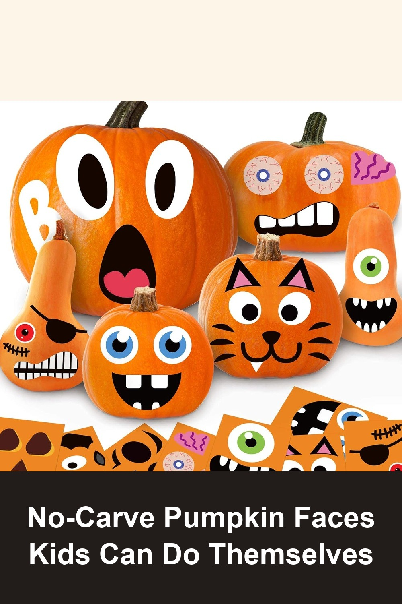
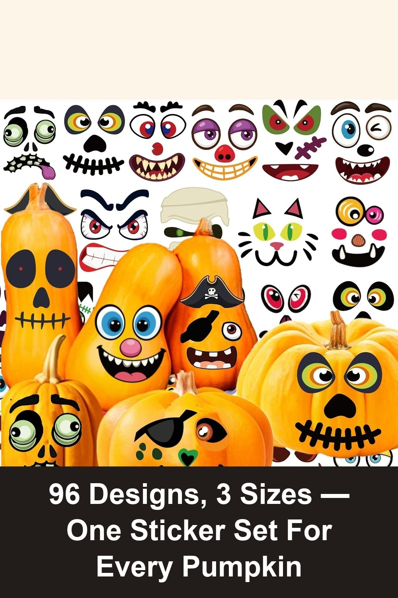
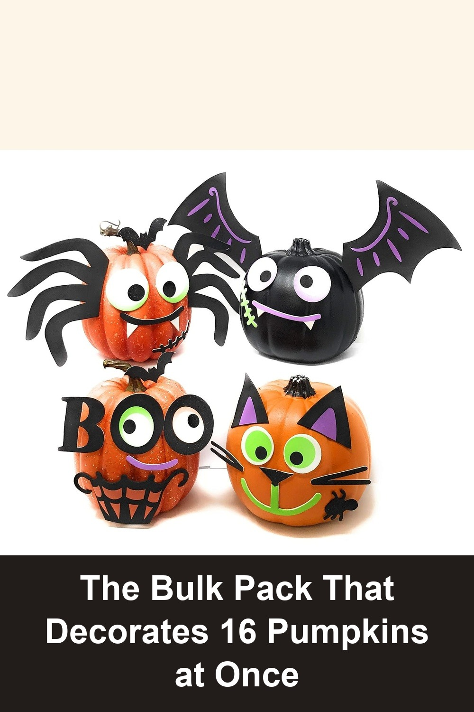

Pumpkin Decorating Kit, 24 Sheets Halloween Pumpkin Stickers Decorations | Halloween Stickers for Kids, Halloween Crafts, Party Games Activities, Party Favors Supplies Gifts, Halloween Decorations
24 sheets of peel-and-stick pumpkin faces in 12 different expressions — no knives, no mess, no carving injuries. Just pick a face and stick it on, so even toddlers can make their own jack-o-lantern.
This activity was not only so much fun for my 2-year-old daughter, but also safe and super easy to use. It kept her engaged for over 30 minutes at a time, which is a huge win in our house!— verified Amazon buyer
View on Amazon →
96Pack Halloween Pumpkin Decorating Stickers, Pumpkin Painting Kit Decor | 96 Designs Face Stickers for All Pumpkins, 3 Different Sizes Craft Kit for Kids Halloween Decorations Party Favors Supplies
43 sheets of non-repeating designs in three sizes, so tiny mini pumpkins and big porch pumpkins both get a matching face — an easy way to decorate a whole pumpkin patch without a single carving tool.
I ordered different size pumpkins small medium and large. I chose these stickers because they did have larger size ones. There was a good variety of different sizes that worked for each of my pumpkins. This is so much fun and much easier than carving a pumpkin.— verified Amazon buyer
View on Amazon →
Funiverse Mega Bulk Pack 126 Piece Foam Halloween Pumpkin Decorating Craft Kit Stickers - Makes 16 Pumpkins (Pumpkins Not Included)
126 foam stickers in 4 designs (black cat, spider, vampire bat, ghost) — enough for a whole classroom, trunk-or-treat table, or birthday party to each decorate their own pumpkin at the same time.
I cannot get over how much fun we had with my grandkids (4 and 2 years old) using this kit to decorate their pumpkins. The 4 year old was basically able to do this by themselves... the stickiness was good, stayed on well but the kids were able to remove and restick several times if they wanted to.— verified Amazon buyer
View on Amazon →